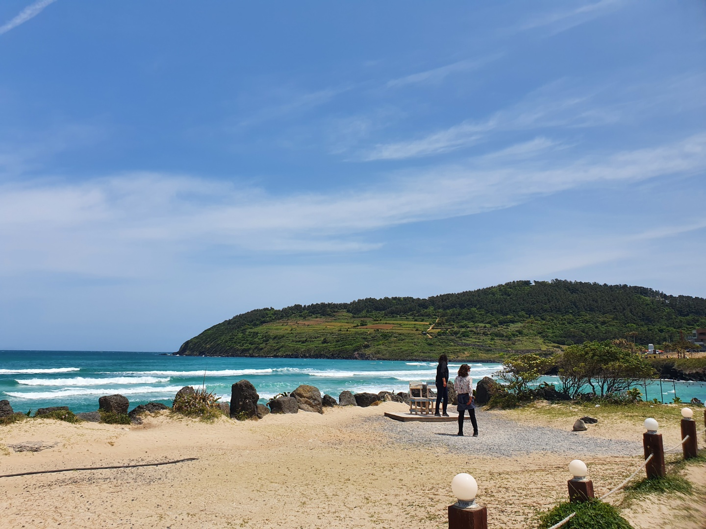
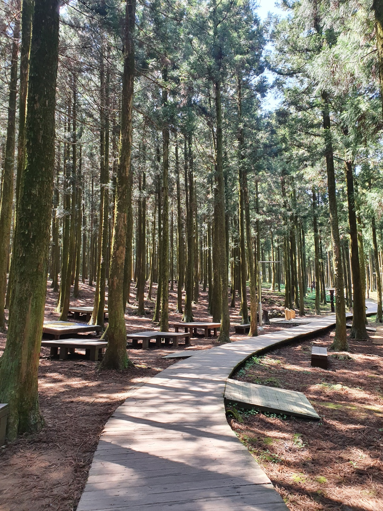
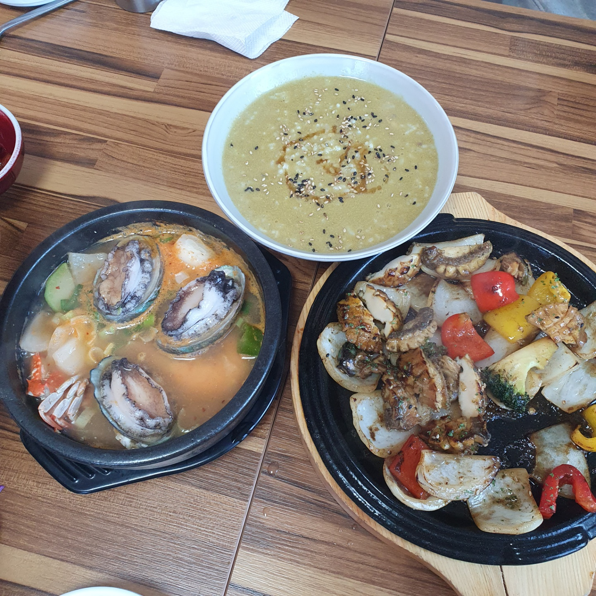
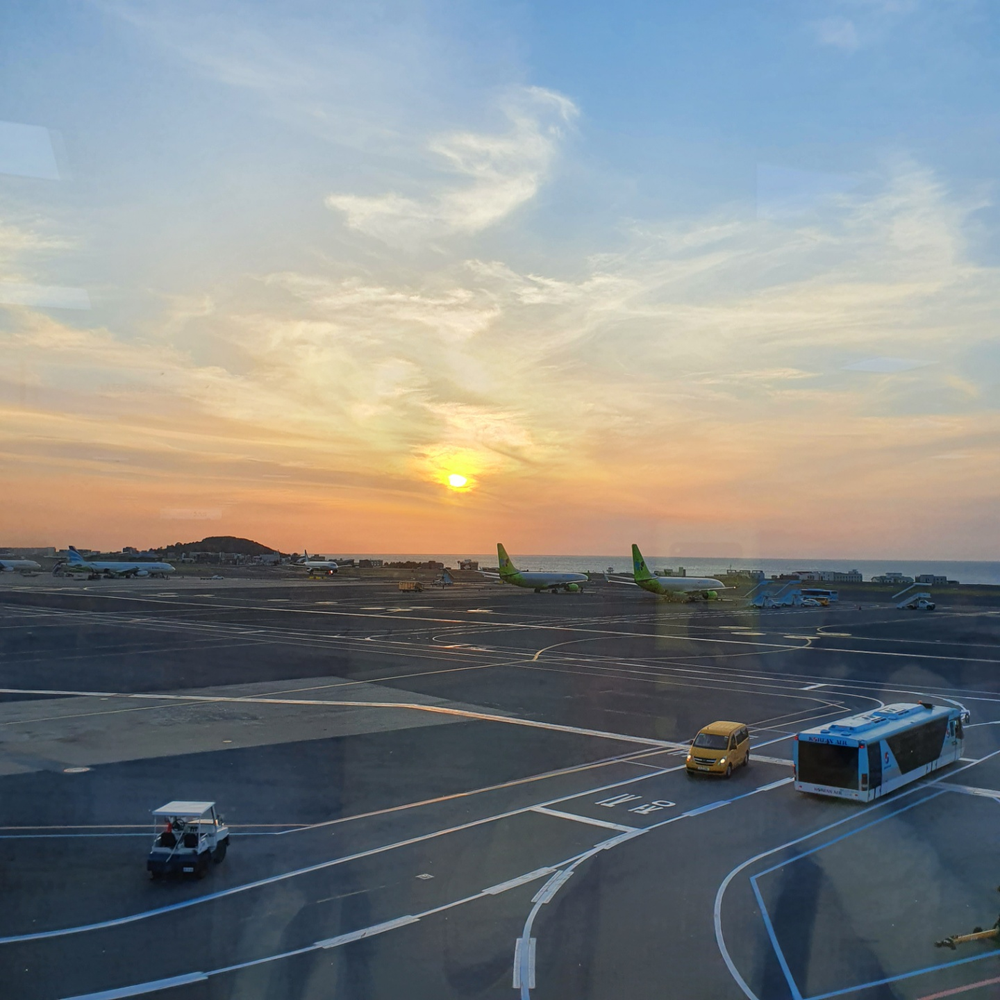

이전으로
제주도 3일 여행 계획
셋째날
날짜: 2021.04.25
코스: 함덕해수욕장(일출)->절물자연휴양림->오쿠다(점심)->공항
함덕해수욕장 일출

주소:제주특별자치도 제주시 조천읍 조함해안로 525
장소 설명: 걷기좋은 해안가
절물자연휴양림

주소:제주특별자치도 제주시 명림로 584
장소 설명: 숲속에 둘러쌓인 데크길
오쿠다

주소:제주특별자치도 제주시 용문로18길 60-5
장소 설명: 전복요리 맛집
